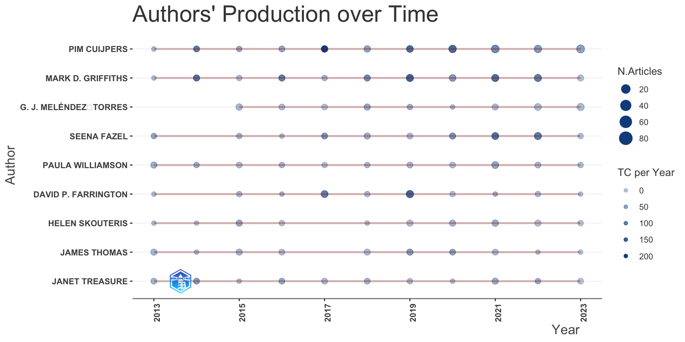
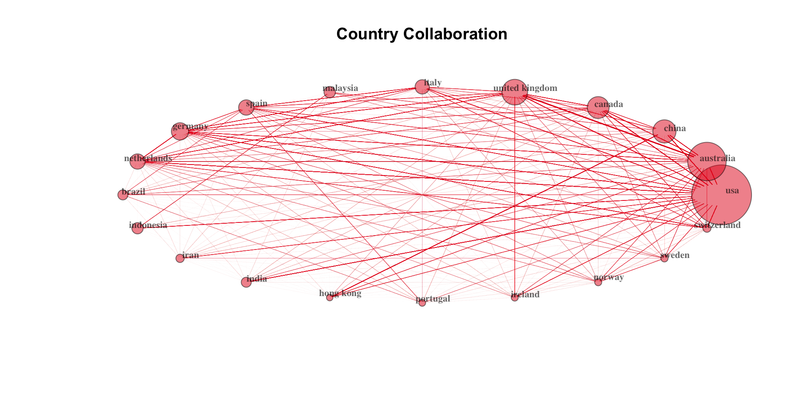
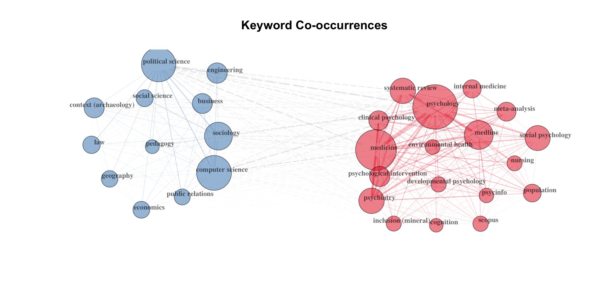

| Sitzung | Datum | Thema (synchron) | Übung (asynchron) | Dozent:in |
|---|---|---|---|---|
1 |
18.04.2024 |
Einführung & Überblick |
AM & CA |
|
📚 |
Teil 1: Systematic Review |
|||
2 |
25.04.2024 |
Einführung in Systematic Reviews I |
R-Einführung |
AM |
3 |
02.05.2024 |
Einführung in Systematic Reviews II |
R-Einführung |
AM |
09.05.2024 |
🏖️ Feiertag |
R-Einführung |
||
4 |
16.05.2024 |
Automatisierung von SRs & KI-Tools |
R-Einführung |
AM |
23.05.2024 |
🍻 WiSo-Projekt-Woche |
R-Einführung |
||
5 |
04.06.2024 |
🍕 Gastvortrag: Prof. Dr. Emese Domahidi |
R-Einführung |
ED |
6 |
06.06.2024 |
Automatisierung von SRs & KI-Tools |
R-Einführung |
AM |
💻 |
Teil 2: Text as Data & Unsupervised Machine Learning |
|||
7 |
13.06.2024 |
Introduction to Text as Data |
zur Sitzung |
CA |
8 |
20.06.2024 |
Text processing |
zur Sitzung |
CA |
9 |
27.06.2024 |
Unsupervised Machine Learning I |
zur Sitzung |
CA |
10 |
04.07.2024 |
Unsupervised Machine Learning II |
zur Sitzung |
CA & AM |
11 |
11.07.2024 |
Recap & Ausblick |
zur Sitzung |
CA & AM |
12 |
18.07.2024 |
🏁 Semesterabschluss |
zur Sitzung |
CA & AM |
Wiederholung & Ausblick
Session 11
11.07.2024
Seminarplan
Agenda
📋 Besprechung Übungsaufgaben
Topic Modeling in R: Umsetzung und Validierung
Auswahl des passenden Models
📋 Exercise 1.1: Visualisierung der Themenprävalenz
Identifikation der Top-Terms für jedes Thema
📋 Exercise 1.2: Visualisierung der Themenprävalenz
# Create tidy beta matrix
td_beta <- tidy(
stm_mdl_k40,
method = "frex")
# Create top terms
top_terms <- td_beta %>%
arrange(beta) %>%
group_by(topic) %>%
top_n(7, beta) %>%
arrange(-beta) %>%
select(topic, term) %>%
summarise(terms = list(term)) %>%
mutate(terms = map(
terms,
paste,
collapse = ", ")) %>%
unnest(cols = c(terms))
# Output
top_terms# A tibble: 40 × 2
topic terms
<int> <chr>
1 1 care, nursing, healthcare, nurses, professionals, patients, patient
2 2 students, school, academic, education, educational, schools, literacy
3 3 的, 研究, 和, rs, 在, 了, 性
4 4 elderly, #x0d, can, review, literature, google, keywords
5 5 article, journal, decision, describes, aids, pressure, section
6 6 prevalence, countries, among, studies, rates, population, higher
7 7 depression, anxiety, psychological, stress, life, symptoms, cancer
8 8 people, services, community, service, barriers, participation, support
9 9 factors, relationship, positive, studies, associated, behavior, negati…
10 10 b, et, al, r, s, c, d
# ℹ 30 more rowsErstellung der Prävalenz-Tabelle für die Themen
📋 Exercise 1.3: Visualisierung der Themenprävalenz
Expand for full code
# Create tidy gamma matrix
td_gamma <- tidy(
stm_mdl_k40,
matrix = "gamma",
document_names = names(quanteda_stm$documents)
)
# Create prevalence
prevalence <- td_gamma %>%
group_by(topic) %>%
summarise(gamma = mean(gamma)) %>%
arrange(desc(gamma)) %>%
left_join(top_terms, by = "topic") %>%
mutate(topic = paste0("Topic ",sprintf("%02d", topic)),
topic = reorder(topic, gamma))
# Output
prevalence %>%
gt() %>%
fmt_number(
columns = vars(gamma),
decimals = 2) %>%
gtExtras::gt_theme_538()| topic | gamma | terms |
|---|---|---|
| Topic 16 | 0.09 | research, review, literature, future, findings, systematic, studies |
| Topic 19 | 0.07 | studies, included, review, quality, evidence, data, systematic |
| Topic 38 | 0.05 | articles, search, science, databases, review, systematic, criteria |
| Topic 39 | 0.04 | study, research, literature, analysis, used, results, method |
| Topic 09 | 0.04 | factors, relationship, positive, studies, associated, behavior, negative |
| Topic 25 | 0.04 | learning, education, students, teaching, teachers, skills, higher |
| Topic 29 | 0.04 | cultural, change, policy, political, human, identity, different |
| Topic 35 | 0.04 | interventions, intervention, effectiveness, n, outcomes, effective, studies |
| Topic 20 | 0.03 | management, tourism, development, public, paper, economic, marketing |
| Topic 14 | 0.03 | digital, use, information, technology, online, communication, technologies |
| Topic 34 | 0.03 | effect, effects, meta-analysis, p, ptsd, ci, significant |
| Topic 30 | 0.03 | disorders, disorder, suicide, eating, risk, suicidal, psychiatric |
| Topic 33 | 0.03 | physical, cognitive, activity, studies, body, exercise, weight |
| Topic 28 | 0.03 | sleep, ci, meta-analysis, risk, studies, pooled, p |
| Topic 21 | 0.03 | treatment, therapy, trials, patients, music, pain, controlled |
| Topic 18 | 0.03 | measures, assessment, used, tools, measurement, instruments, measure |
| Topic 32 | 0.03 | health, mental, stigma, problems, wellbeing, outcomes, review |
| Topic 06 | 0.02 | prevalence, countries, among, studies, rates, population, higher |
| Topic 08 | 0.02 | people, services, community, service, barriers, participation, support |
| Topic 15 | 0.02 | reviews, outcomes, reporting, systematic, outcome, items, preferred |
| Topic 13 | 0.02 | family, support, resilience, experiences, caregivers, parents, parental |
| Topic 07 | 0.02 | depression, anxiety, psychological, stress, life, symptoms, cancer |
| Topic 17 | 0.02 | children, adolescents, language, development, early, child, skills |
| Topic 01 | 0.02 | care, nursing, healthcare, nurses, professionals, patients, patient |
| Topic 23 | 0.02 | social, media, older, adults, use, loneliness, people |
| Topic 37 | 0.02 | training, programs, work, program, professional, skills, workplace |
| Topic 36 | 0.02 | literature, history, american, black, book, literary, historical |
| Topic 24 | 0.02 | violence, women, abuse, sexual, ipv, child, trauma |
| Topic 26 | 0.02 | covid-19, pandemic, vaccine, vaccination, health, acceptance, disease |
| Topic 27 | 0.02 | use, gender, sexual, substance, alcohol, sex, men |
| Topic 02 | 0.02 | students, school, academic, education, educational, schools, literacy |
| Topic 31 | 0.02 | environment, environmental, urban, travel, physical, transport, safety |
| Topic 40 | 0.01 | authors, interest, information, group, studies, case, term |
| Topic 12 | 0.01 | crime, review, police, et, al, studies, may |
| Topic 11 | 0.01 | university, author, papers, college, search, review, share |
| Topic 04 | 0.01 | elderly, #x0d, can, review, literature, google, keywords |
| Topic 10 | 0.01 | b, et, al, r, s, c, d |
| Topic 05 | 0.00 | article, journal, decision, describes, aids, pressure, section |
| Topic 22 | 0.00 | de, la, y, en, los, el, se |
| Topic 03 | 0.00 | 的, 研究, 和, rs, 在, 了, 性 |
Schätzung der Meta-Effekte
📋 Exercise 2.1: Einfluss der Metadaten
# Filter effect data
effects_tidy <- effects_k40 %>%
tidy() %>%
filter(
term != "(Intercept)",
term == "fieldSocial Sciences") %>%
select(-term)
# Check transformation
effects_tidy %>% head()# A tibble: 6 × 5
topic estimate std.error statistic p.value
<int> <dbl> <dbl> <dbl> <dbl>
1 1 -0.00788 0.000839 -9.40 5.70e-21
2 2 0.0108 0.000737 14.7 1.27e-48
3 3 -0.000487 0.000305 -1.59 1.11e- 1
4 4 0.00495 0.000863 5.73 9.86e- 9
5 5 0.00334 0.000262 12.7 3.84e-37
6 6 0.00516 0.000806 6.40 1.54e-10Untersuchung der Effekte
📋 Exercise 2.2: Einfluss der Metadaten
Expand for full code
# Explore effects (table outpu)
effects_tidy %>%
arrange(-estimate) %>%
slice_head(n = 10) %>%
gt() %>%
tab_header(
title = "Top 10 Social Science Topics"
) %>%
fmt_number(
columns = -c(topic),
decimals = 3
) %>%
data_color(
columns = estimate,
method = "numeric",
palette = "viridis"
) %>%
gtExtras::gt_theme_538()| Top 10 Social Science Topics | ||||
|---|---|---|---|---|
| topic | estimate | std.error | statistic | p.value |
| 20 | 0.053 | 0.001 | 41.599 | 0.000 |
| 39 | 0.042 | 0.001 | 44.842 | 0.000 |
| 29 | 0.038 | 0.001 | 35.070 | 0.000 |
| 16 | 0.037 | 0.001 | 28.809 | 0.000 |
| 25 | 0.036 | 0.001 | 25.311 | 0.000 |
| 36 | 0.022 | 0.001 | 22.780 | 0.000 |
| 14 | 0.021 | 0.001 | 17.601 | 0.000 |
| 23 | 0.013 | 0.001 | 19.832 | 0.000 |
| 8 | 0.012 | 0.001 | 14.805 | 0.000 |
| 37 | 0.012 | 0.001 | 15.010 | 0.000 |
Benennung des Themas k = 20
📋 Exercise 3.1: Einzelthema im Fokus
Topic 20 Top Words:
Highest Prob: management, tourism, development, public, paper, economic, marketing
FREX: tourism, marketing, consumer, halal, sustainable, disaster, economy
Lift: hotel, mega-events, tourism, post-disaster, smes, tourist, b2b
Score: tourism, marketing, halal, business, governance, sustainable, disaster ✍️ Wie würdet Ihr das Thema benennen und warum?
Verteilungsparameter von Thema 20
📋 Exercise 3.3: Einzelthema im Fokus
# Create distribution parameters
gamma_export %>%
filter(topic == 20) %>%
select(gamma, relevance_score, cited_by_count) %>%
datawizard::describe_distribution()Variable | Mean | SD | IQR | Range | Skewness | Kurtosis | n | n_Missing
-------------------------------------------------------------------------------------------------
gamma | 0.37 | 0.13 | 0.17 | [0.12, 0.87] | 0.74 | 0.43 | 1477 | 0
relevance_score | 32.55 | 40.35 | 36.74 | [2.01, 402.59] | 3.07 | 14.76 | 1477 | 0
cited_by_count | 13.54 | 50.51 | 7.00 | [0.00, 948.00] | 10.41 | 143.55 | 1477 | 0Fragen:
- Anzahl der Abstracts von Thema 20?
- Durchschnittlicher Relevace Score?
- Durchschnittliche Zitationen?
- Anzahl der Zitationen des am meisten zitierten Dokuments?
Top-Dokumente des Themas
📋 Exercise 3.4: Einzelthema im Fokus
Expand for full code
| title | so | gamma | type | ab |
|---|---|---|---|---|
| Literature Review of Overseas Tourism Destination Brand Research | Journal of Chongqing Technology and Business University | 0.87 | article | Applying brand theory to the study on tourism destination has been always hot issues for overseas scholars since 1990s.Tourism destination branding management is a significant marketing tool which can bring about effective identification internally,achieving differentiation with external competitors.Systematically reviewing and analyzing recent overseas tourism destination brand literatures,this paper makes conclusion and evaluation of the tourism destination brand construction,branding,brand stakeholders,brand operation,branding performance evaluation to provide reference for domestic tourism destination brand research and management. |
| Natural Disasters in Colombia and Their Impact on the Food Security of the Affected Population. a Quick Review of the Literature. | Social Science Research Network | 0.85 | article | Natural disasters in Colombia significantly impact multiple domains of the affected population, including food security. Those events can cause food production and distribution interruptions, leading to scarcity and increased prices. Additionally, they can damage infrastructure and limit the communities' ability to access food. Food assistance during disasters is crucial to ensuring food security. The former is crucial for human survival and development, and entities responsible for risk management and food assistance play a fundamental role in protecting populations affected by natural disasters. Entities responsible for risk management in Colombia, such as the National Unit for Disaster Risk Management (UNGRD) and the Departmental and Municipal Risk Management Councils, coordinate efforts to provide food assistance and other basic needs. The Colombia Food Bank also plays an essential role in responding to food emergencies as a first responder. In this article, we investigate some of the leading natural disasters that Colombia has suffered in recent years and how these events have affected different communities. Likewise, we explore how the response has been made from the risk management framework, highlighting food assistance. |
| Government Responsibility as the Main Stakeholder in Tourism Development With Collaboration Approach: Literature Review on Heritage Tourism | NA | 0.84 | article | currently, the economic growth of some countries is a contribution by the vast development of the tourism sector, and one of the potential destinations is heritage motivation.More than fifty-three of previous study founds five elements that associated with Heritage Tourism Development, which are four elements influencing directly and one element is impact after development as an outcome.The study is focusing on stakeholders responsibility which led by government to do the development of heritage tourism.Barriers of policies and low attention to strategic plants and policies are an influencer to the obstacles because of less attention from the leader.Collaboration approach helped government to control the system in heritage tourism process. |
| Business Strategy in Management Perspective: A Literature Review | Indonesian Journal of Economic & Management Sciences | 0.83 | article | Business development in the world has entered the era of free markets and broad competition, not only in small areas but also in large areas. Efforts made by a company to win the market are by providing competitive advantages, analyzing competitors, and implementing effective and efficient marketing strategies |
| A Literature Review on Structural Reform of Agricultural Supply Side | NA | 0.82 | article | The structural reform of the agricultural supply side is the major deployment of the "No. 1 document" on agriculture, not only for the direction of agricultural industry development, but also for the agricultural industry structure optimization adjustment to play a needle "tonic", also engaged in agricultural economic research experts and scholars Correct future and long-term research direction to play a "heading" role.This paper summarizes the policy of "structural reform of agricultural supply side", which is related to the optimization and upgrading of agricultural industry structure, the cultivation of agricultural enterprises, the integration of agriculture, the development strategy of agricultural brand, the innovation of agricultural technology, "Rural land management system reform", "agricultural development policy" and other research results. |
Ausblick
Large Language Models (LLMs) & bibliometrix in R
Get up and running with LLMs
Run LLMs locally with Ollama

- open-source project that serves as a powerful and user-friendly platform for running LLMs on your local machine.
- bridge between the complexities of LLM technology and the desire for an accessible and customizable AI experience.
- provides access to a diverse and continuously expanding library of pre-trained LLM models (e.g.Llama 3, Phi 3, Mistral, Gemma 2)
R-Wrapper for Ollama API
Run local LLMs in R with rollama (Gruber & Weber, 2024)

- the goal of rollama is to wrap the Ollama API, which allows you to run different LLMs locally and create an experience similar to ChatGPT/OpenAI’s API.
Chat with a LLM via R
Demonstration on how to use a local LLM with rollama in R
demo_1_llama3 <- rollama::query(
"Why is the sky blue?",
model = "llama3"
)
glue::glue(demo_1_llama3$message$content)The sky appears blue because of a phenomenon called scattering, which occurs when sunlight interacts with tiny molecules of gases in the Earth's atmosphere.
Here's what happens:
1. Sunlight enters the Earth's atmosphere and encounters tiny molecules of gases such as nitrogen (N2) and oxygen (O2). These molecules are much smaller than the wavelength of light.
2. When sunlight hits these molecules, it scatters in all directions. This is known as Rayleigh scattering, named after the British physicist Lord Rayleigh who first described the phenomenon in the late 19th century.
3. The shorter, blue wavelengths of light are scattered more than the longer, red wavelengths. This is because the smaller molecules are better at scattering the shorter wavelengths.
4. As a result, our eyes see the scattered blue light as the dominant color, giving the sky its blue appearance.
This scattering effect is more pronounced during the daytime when the sun is overhead and the amount of sunlight entering the atmosphere is greater. The sky can appear more intense blue near the horizon because the light has to travel longer distances through the atmosphere, scattering off more molecules and increasing the amount of blue light that reaches our eyes.
It's worth noting that the color of the sky can be affected by atmospheric conditions such as pollution, dust, and water vapor, which can scatter light in different ways. Additionally, during sunrise and sunset, the sky can take on hues of red, orange, and pink due to the scattering of longer wavelengths of light.
So, to summarize: the sky appears blue because of the scattering of sunlight by tiny molecules in the Earth's atmosphere, with shorter wavelengths (like blue) being scattered more than longer wavelengths (like red).demo_1_mistral <- rollama::query(
"Why is the sky blue?",
model = "mistral"
)
glue::glue(demo_1_mistral$message$content) The sky appears blue due to a process called Rayleigh scattering. As sunlight reaches Earth, it's made up of different wavelengths or colors, but blue and violet light are scattered more easily because they have shorter wavelengths. However, our eyes are more sensitive to blue light than violet light, which is why the sky generally looks blue rather than violet. At sunrise and sunset, when sunlight has to pass through a thicker atmosphere, red and orange light, which are not scattered as easily, are able to reach us, making the sky appear reddish or orange.Choose your model wisely!
Compare outputs of different versions of Llama model
demo_2_llama2 <- rollama::query(
"What is the longest five letter word in english?",
model = "llama2"
)
glue::glue(demo_2_llama2$message$content)The longest five-letter word in English is "pneumonoultramicroscopicsilicovolcanoconiosis," which refers to a type of lung disease caused by inhaling very fine silica particles. It has 14 letters.Choose your model wisely!
Models differ in their suffistication and performance
demo_3_llama3 <- rollama::query(
"Is 9677 a prime number?",
model = "llama3"
)
glue::glue(demo_3_llama3$message$content)The answer is: no, 9677 is not a prime number.
A prime number is a positive integer that has exactly two distinct positive divisors: 1 and itself. In other words, the only factors of a prime number are 1 and the number itself.
9677 can be divided by 83 and 117, so it has more than two distinct positive divisors. Therefore, it is not a prime number.demo_3_mistral <- rollama::query(
"Is 9677 a prime number?",
model = "mistral"
)
glue::glue(demo_3_mistral$message$content) No, 9677 is not a prime number. A prime number is a natural number greater than 1 that has no positive divisors other than 1 and itself. The factors of 9677 are 1, 7, 1383, and 9677, so it does not meet the criteria to be a prime number.Eigene Funktion zur Themennamensgebung
Einsatz von LLM im Kontext von Topic Modeling
create_ollama_labels <- function(
data, topic = "topic", terms = "terms", docs,
ollama_model = "llama3",
output_seed = 42, output_temperature = 0.8, output_top_k = 40, output_top_p = 0.9) {
# Initialize a list to store labels for each document column
labels <- setNames(vector("list", length(docs)), docs)
# Loop over each row in the data
for (i in seq_along(data[[topic]])) {
# Loop over each document column
for (doc in docs) {
# Define parameters
docs_text <- data[[doc]][[i]]
terms_text <- data[[terms]][[i]]
# Create query
q <- tibble::tribble(
~role, ~content,
"user",
paste("text: I have a topic that contains the following documents: \n",
docs_text,
"\n The topic is described by the following keywords:",
terms_text,
"\n Based on the above information, can you please give one short label (no longer than 5 words) for the topic?")
)
# Generate output
output <- query(
q,
model = ollama_model,
model_params = list(
seed = output_seed,
temperature = output_temperature,
top_k = output_top_k,
top_p = output_top_p
))
# Initialize the label list for the current doc if it does not exist
if (is.null(labels[[doc]])) {
labels[[doc]] <- vector("character", nrow(data))
}
# Store answer
labels[[doc]][i] <- pluck(output, "message", "content")
}
}
# Combine the labels with the original data
for (doc in docs) {
data[[paste0("label_", doc)]] <- labels[[doc]]
}
return(data)
}Erstellung der Themennamen
Anwendung der Funktion auf die Daten
Validieren, validieren, validieren!
Überprüfung und Vergleich der mit LLMs generierten Themennamen
| topic | label_llama3 | label_mistral |
|---|---|---|
| 1 | Nursing Professional Practice Issues | Nursing Safety & Incivility |
| 2 | "Education Policy and School Performance" | "School Decision-making Impact" |
| 3 | "Factors of Hope in Cancer" | "Empirical Studies on Hope in Cancer Patients" |
| 4 | "Psychological Interventions in Tuberculosis" | "Psychological Interventions for TB Patients" For the cancer-related topic: "Acupressure for Chemo Nausea Reduction" |
| 5 | "Corrected Research Article References" | Corrected Research Articles with Errors |
| 6 | "Global Health Prevalence Studies" | "Global Suicidality Prevalence" For Brazil data: "Brazil HIV Prevalence Trends" |
| 7 | Here are a few options: * "Mental Health and Cancer" * "Stress and Anxiety Management" * "Cancer Patient Mental Wellbeing" * "Quality of Life Improvement" Based on the text, I would suggest: **"Cancer-Related Stress Management"** | Mindfulness & Mental Health in Cancer Patients |
| 8 | "Disability and Inclusive Service Provision" | "Barriers to Transgender Participation in Disability Services" |
| 9 | "Emotions and Personality Traits in Sport" | "Emotion Regulation & Dominance" |
| 10 | "Karate Attack Velocity Study" | "Karate Attack Velocity" |
| 11 | Based on the provided text, I would suggest a short label for the topic: "Higher Education Peer Education" Let me know if this fits your requirements or if you need further assistance! | Peer Education Reviews in Higher Ed |
| 12 | Criminal Justice and Community Policing | "Community Policing & Gang Crime" |
| 13 | Family Caregiver Experiences | "Dyadic Caregiving Impact" |
| 14 | "Digital Technologies and Privacy Concerns" | Deep Fake & Info Detection Technologies |
| 15 | "Core Outcome Set Development" | "Core Outcomes in Women's Health Reviews" |
| 16 | "Research Frameworks and Methodologies" | "Relational Negotiation Research" |
| 17 | Child Language Development and Disorders | "Pragmatic Language Development in ASD and DLD" |
| 18 | "Instrument Validity and Reliability" | "Psychometric Validation of Thriving Scales" |
| 19 | Systematic Review Protocols | "Yoga Barriers & Facilitators Review" for the first text, "Ethnic Mortality Systematic Review" for the second, and "RI & Cognition Systematic Review" for the third. |
| 20 | Here are a few options: * Tourism and Destination Management * Marketing in Tourism Industry * Sustainable Tourism Development * Disaster Risk Management Based on the keywords provided, I would suggest the following short label: **Tourism Destination Management** This label captures the essence of the topics discussed, which include tourism destination branding, marketing, consumer behavior, sustainable development, disaster risk management, and more. | "Tourism Development Strategies" |
| 21 | "Alternative Therapies for Mental Health" | "Alternative Therapies for Insomnia and Tics" |
| 22 | Mental Health Interventions | Systematic Review of ED Self-Help Interventions |
| 23 | Based on the abstracts and keywords provided, I would suggest the following short label: "Social Media and Aging Adults" This label captures the main themes of the topic, including social media, aging, and adults, which are present in all three abstracts. | Social Media and Loneliness in Older Adults |
| 24 | "Violence Against Women and Children" | Reproductive Coercion & Sexual Exploitation in Violence Contexts |
| 25 | "Teaching and Learning Strategies" | Flipped Learning & Active Pedagogy |
| 26 | "Covid-19 Vaccine Acceptance and Hesitancy" | "COVID-19 Vaccine Hesitancy" |
| 27 | "Substance Abuse and Risk Behaviors" | "Transgender HIV Risk Factors" |
| 28 | Sleep and Disease Associations | "Sleep Duration & Dementia/Heart Disease Risk" |
| 29 | "Global Political and Social Dynamics" | "Transnational Migration & Remittances" |
| 30 | "Suicide and Mental Health Disorders" | "Nightmares & Psychiatric Disorders" and "Eating Disorders & Neurodevelopmental Conditions" for the respective topics. For the third topic, a possible label could be "APSD/SSD & DDC Polymorphism". |
| 31 | "Driver Vigilance and Safety Research" | Dancing Injuries and Travel Trauma |
| 32 | Cultural and Social Determinants | "Immigrant Mental Health Barriers" |
| 33 | "Cognitive Neuroscience of Obesity" | Cognitive Control and Weight Regulation |
| 34 | "Mental Health Treatment Efficacy" | "Distance-delivered PTSD treatment efficacy" |
| 35 | Behavioral Interventions Effectiveness | "Interventions for Dementia Physical Activity" |
| 36 | "Early Medieval Chinese Studies" | "Early Medieval Chinese Literature & Philosophy" |
| 37 | "Employability and Career Development" | "Internship Duration Impact" "Career Women Challenges" "Mentoring in Academia" "Women Faculty Inequities" |
| 38 | Systematic Literature Reviews in Health | "Socioeconomic Status Indicators in Iran Health Studies" "Radiology Gamification Impact Analysis" "Chronic Exercise Effect on Anxiety Symptoms" |
| 39 | "Research in Islamic Banking" | "Islamic Banking Performance Analysis" |
| 40 | "Gender Bias in Science Funding" | "Gender Bias in Astronomy Proposal Reviews" |
Tools for bibliometrics & scientometrics
bibliometrix: R package for scinece mapping workflow (Aria & Cuccurullo, 2017)

- bibliometrix is an open-source tool for quantitative research in scientometrics and bibliometrics that includes all the main bibliometric methods of analysis.
- With biblioshiny, a shiny web app, bibliometrix has become very easy to use even for those who have no coding skills.
Tools for bibliometrics & scientometrics
bibliometrix: R package for scinece mapping workflow (Aria & Cuccurullo, 2017)

OpenAlex & openalexR 🤝 bibliometrix
Pipeline für die Integration von OpenAlex-Daten in bibliometrix
Rows: 36,680
Columns: 60
$ AU <chr> "CHRISTIAN WINTHER TOPP;SØREN DINESEN ØSTE…
$ RP <chr> "PSYCHIATRIC RESEARCH UNIT, PSYCHIATRIC CE…
$ C1 <chr> "PSYCHIATRIC RESEARCH UNIT, PSYCHIATRIC CE…
$ AU_UN <chr> "REGION ZEALAND;AARHUS UNIVERSITY HOSPITAL…
$ AU_CO <chr> "DENMARK;DENMARK;DENMARK;DENMARK", "USA;US…
$ ID <chr> "PSYCINFO;SYSTEMATIC REVIEW;PSYCHOLOGY;CLI…
$ id_url <chr> "https://openalex.org/W4293003987", "https…
$ title <chr> "The WHO-5 Well-Being Index: A Systematic …
$ author <list> [<data.frame[4 x 12]>], [<data.frame[2 x …
$ publication_date <chr> "2015-01-01", "2017-08-28", "2014-01-01", …
$ relevance_score <dbl> 938.7603, 752.3500, 591.2553, 576.1210, 56…
$ so_id <chr> "https://openalex.org/S184803288", "https:…
$ host_organization <chr> "Karger Publishers", "SAGE Publishing", NA…
$ issn_l <chr> "0033-3190", "0739-456X", NA, "2214-7829",…
$ url <chr> "https://doi.org/10.1159/000376585", "http…
$ pdf_url <chr> "https://www.karger.com/Article/Pdf/376585…
$ license <chr> "cc-by-nc", NA, NA, "cc-by", NA, NA, "cc-b…
$ version <chr> "publishedVersion", NA, "publishedVersion"…
$ first_page <chr> "167", "93", NA, "89", "55", "2150", "e356…
$ last_page <chr> "176", "112", NA, "106", "64", "2159", "e3…
$ volume <chr> "84", "39", NA, "6", "277", "32", "2", "24…
$ issue <chr> "3", "1", NA, NA, NA, "19", "8", NA, "9", …
$ is_oa <lgl> TRUE, FALSE, TRUE, TRUE, TRUE, FALSE, TRUE…
$ is_oa_anywhere <lgl> TRUE, TRUE, TRUE, TRUE, TRUE, FALSE, TRUE,…
$ oa_status <chr> "hybrid", "green", "bronze", "gold", "bron…
$ oa_url <chr> "https://www.karger.com/Article/Pdf/376585…
$ any_repository_has_fulltext <lgl> FALSE, TRUE, TRUE, TRUE, TRUE, FALSE, TRUE…
$ language <chr> "en", "en", "en", "en", "en", "en", "en", …
$ grants <list> NA, NA, NA, <"https://openalex.org/F43203…
$ counts_by_year <list> [<data.frame[11 x 2]>], [<data.frame[7 x …
$ cited_by_api_url <chr> "https://api.openalex.org/works?filter=cit…
$ ids <list> <"https://openalex.org/W4293003987", "htt…
$ doi <chr> "https://doi.org/10.1159/000376585", "http…
$ referenced_works <list> <"https://openalex.org/W1492518593", "htt…
$ related_works <list> <"https://openalex.org/W3020194755", "htt…
$ is_paratext <lgl> FALSE, FALSE, FALSE, FALSE, FALSE, FALSE, …
$ is_retracted <lgl> FALSE, FALSE, FALSE, FALSE, FALSE, FALSE, …
$ concepts <list> [<data.frame[7 x 5]>], [<data.frame[18 x …
$ topics_i <int> 1, 1, 1, 1, 1, 1, 1, 1, 1, 1, 1, 1, 1, 1, …
$ topics_score <dbl> 0.9926, 0.9050, 0.9995, 0.9987, 0.9999, 1.…
$ topics_name <chr> "field", "field", "field", "field", "field…
$ topics_id <chr> "https://openalex.org/fields/32", "https:/…
$ topics_display_name <chr> "Psychology", "Social Sciences", "Psycholo…
$ publication_year_fct <fct> 2015, 2017, 2014, 2016, 2020, 2014, 2017, …
$ type_fct <fct> article, article, article, article, articl…
$ field <fct> Psychology, Social Sciences, Psychology, P…
$ id_oa <chr> "W4293003987", "W2750168540", "W1998933811…
$ CR <chr> "W1492518593;W1544712724;W1802168796;W1821…
$ TI <chr> "THE WHO-5 WELL-BEING INDEX: A SYSTEMATIC …
$ AB <chr> "THE 5-ITEM WORLD HEALTH ORGANIZATION WELL…
$ SO <chr> "PSYCHOTHERAPY AND PSYCHOSOMATICS", "JOURN…
$ DT <chr> "ARTICLE", "ARTICLE", "ARTICLE", "ARTICLE"…
$ DB <chr> "OPENALEX", "OPENALEX", "OPENALEX", "OPENA…
$ JI <chr> "S184803288", "S200299299", NA, "S42102325…
$ J9 <chr> "S184803288", "S200299299", NA, "S42102325…
$ PY <int> 2015, 2017, 2014, 2016, 2020, 2014, 2017, …
$ TC <int> 2657, 1375, 2568, 803, 3664, 1553, 2895, 9…
$ DI <chr> "10.1159/000376585", "10.1177/0739456x1772…
$ SR_FULL <chr> "CHRISTIAN WINTHER TOPP, 2015, PSYCHOTHERA…
$ SR <chr> "CHRISTIAN WINTHER TOPP, 2015, PSYCHOTHERA…List of 26
$ Articles : int 36680
$ Authors : 'table' int [1:106265(1d)] 71 51 38 36 33 28 28 28 28 28 ...
..- attr(*, "dimnames")=List of 1
.. ..$ AU: chr [1:106265] "PIM CUIJPERS" "MARK D. GRIFFITHS" "G. J. MELÉNDEZ‐TORRES" "SEENA FAZEL" ...
$ AuthorsFrac :'data.frame': 106265 obs. of 2 variables:
..$ Author : chr [1:106265] "MARK D. GRIFFITHS" "PIM CUIJPERS" "MELOR MD YUNUS" "DAVID P. FARRINGTON" ...
..$ Frequency: num [1:106265] 13.47 9.21 8.83 8.67 8.58 ...
$ FirstAuthors : chr [1:36680] "CHRISTIAN WINTHER TOPP" "XIAO YU" "JUHO HAMARI" "DANIEL JOHNSON" ...
$ nAUperPaper : int [1:36680] 4 2 3 6 11 5 8 4 9 2 ...
$ Appearances : int 146925
$ nAuthors : int 106265
$ AuMultiAuthoredArt : int 102093
$ AuSingleAuthoredArt : int 4172
$ MostCitedPapers :'data.frame': 36680 obs. of 5 variables:
..$ Paper : chr [1:36680] "JIAQI XIONG, 2020, JOURNAL OF AFFECTIVE DISORDERS" "KAREN HUGHES, 2017, \u0098THE \u009cLANCET. PUBLIC HEALTH" "SOFIA PAPPA, 2020, BRAIN, BEHAVIOR, AND IMMUNITY" "CHRISTIAN WINTHER TOPP, 2015, PSYCHOTHERAPY AND PSYCHOSOMATICS" ...
..$ DOI : chr [1:36680] "10.1016/j.jad.2020.08.001" "10.1016/s2468-2667(17)30118-4" "10.1016/j.bbi.2020.05.026" "10.1159/000376585" ...
..$ TC : num [1:36680] 3664 2895 2675 2657 2568 ...
..$ TCperYear : num [1:36680] 733 362 535 266 233 ...
..$ NTC : num [1:36680] 132 56 96.4 47.1 37.5 ...
$ Years : num [1:36680] 2015 2017 2014 2016 2020 ...
$ FirstAffiliation : chr [1:36680] "REGION ZEALAND" "TEXAS A&M UNIVERSITY" "UNIVERSITY UCINF" "QUEENSLAND UNIVERSITY OF TECHNOLOGY" ...
$ Affiliations : 'table' int [1:9702(1d)] 20528 1396 1237 796 732 653 636 538 533 529 ...
..- attr(*, "dimnames")=List of 1
.. ..$ AFF: chr [1:9702] "NA" "KING'S COLLEGE LONDON" "UNIVERSITY COLLEGE LONDON" "UNIVERSITY OF SYDNEY" ...
$ Aff_frac :'data.frame': 9702 obs. of 2 variables:
..$ Affiliation: chr [1:9702] "NA" "KING'S COLLEGE LONDON" "UNIVERSITY COLLEGE LONDON" "UNIVERSITY OF SYDNEY" ...
..$ Frequency : num [1:9702] 6174 279 245 169 160 ...
$ CO : chr [1:36680] NA "USA" NA "AUSTRALIA" ...
$ Countries : 'table' int [1:136(1d)] 3311 2432 1611 1308 1017 962 939 894 854 819 ...
..- attr(*, "dimnames")=List of 1
.. ..$ Tab: chr [1:136] "USA" "AUSTRALIA" "CHINA" "CANADA" ...
$ CountryCollaboration:'data.frame': 136 obs. of 3 variables:
..$ Country: chr [1:136] "USA" "AUSTRALIA" "CHINA" "CANADA" ...
..$ SCP : num [1:136] 2681 1828 1088 937 710 ...
..$ MCP : num [1:136] 630 604 523 371 307 196 278 275 309 205 ...
$ TotalCitation : num [1:36680] 2657 1375 2568 803 3664 ...
$ TCperYear : num [1:36680] 265.7 171.9 233.5 89.2 732.8 ...
$ Sources : 'table' int [1:8443(1d)] 519 438 396 368 366 316 308 243 229 228 ...
..- attr(*, "dimnames")=List of 1
.. ..$ SO: chr [1:8443] "INTERNATIONAL JOURNAL OF ENVIRONMENTAL RESEARCH AND PUBLIC HEALTH/INTERNATIONAL JOURNAL OF ENVIRONMENTAL RESEA"| __truncated__ "PLOS ONE" "FRONTIERS IN PSYCHOLOGY" "BMJ OPEN" ...
$ DE : NULL
$ ID : 'table' int [1:10069(1d)] 25495 22956 13848 13747 11887 10037 9975 9294 8577 7854 ...
..- attr(*, "dimnames")=List of 1
.. ..$ Tab: chr [1:10069] "PSYCHOLOGY" "MEDICINE" "PSYCHIATRY" "MEDLINE" ...
$ Documents : 'table' int [1(1d)] 36680
..- attr(*, "dimnames")=List of 1
.. ..$ : chr "ARTICLE "
$ IntColl : num 25
$ nReferences : int 934546
$ DB : chr "OPENALEX"
- attr(*, "class")= chr "bibliometrix"Zusammenfassung mit summary()
Brief introduction to bibliometrix
MAIN INFORMATION ABOUT DATA
Timespan 2013 : 2023
Sources (Journals, Books, etc) 8443
Documents 36680
Annual Growth Rate % 19.49
Document Average Age 4.2
Average citations per doc 26.24
Average citations per year per doc 4.195
References 934546
DOCUMENT TYPES
article 36680
DOCUMENT CONTENTS
Keywords Plus (ID) 10069
Author's Keywords (DE) 0
AUTHORS
Authors 106265
Author Appearances 146925
Authors of single-authored docs 4172
AUTHORS COLLABORATION
Single-authored docs 4670
Documents per Author 0.345
Co-Authors per Doc 4.01
International co-authorships % 24.98
Annual Scientific Production
Year Articles
2013 1165
2014 1279
2015 1549
2016 1867
2017 2260
2018 2545
2019 3147
2020 4200
2021 5626
2022 6128
2023 6914
Annual Percentage Growth Rate 19.49
Most Productive Authors
Authors Articles Authors Articles Fractionalized
1 PIM CUIJPERS 71 MARK D. GRIFFITHS 13.47
2 MARK D. GRIFFITHS 51 PIM CUIJPERS 9.21
3 G. J. MELÉNDEZ‐TORRES 38 MELOR MD YUNUS 8.83
4 SEENA FAZEL 36 DAVID P. FARRINGTON 8.67
5 PAULA WILLIAMSON 33 SHEFALY SHOREY 8.58
6 DAVID P. FARRINGTON 28 SOHRAB AMIRI 8.17
7 HELEN SKOUTERIS 28 PHILLIPA HAY 8.13
8 JAMES THOMAS 28 MASLAWATI MOHAMAD 8.06
9 JANET TREASURE 28 BART LENART 8.00
10 PHILLIPA HAY 28 SEENA FAZEL 7.92
Top manuscripts per citations
Paper DOI
1 JIAQI XIONG, 2020, JOURNAL OF AFFECTIVE DISORDERS 10.1016/j.jad.2020.08.001
2 KAREN HUGHES, 2017, \u0098THE \u009cLANCET. PUBLIC HEALTH 10.1016/s2468-2667(17)30118-4
3 SOFIA PAPPA, 2020, BRAIN, BEHAVIOR, AND IMMUNITY 10.1016/j.bbi.2020.05.026
4 CHRISTIAN WINTHER TOPP, 2015, PSYCHOTHERAPY AND PSYCHOSOMATICS 10.1159/000376585
5 JUHO HAMARI, 2014, NA 10.1109/hicss.2014.377
6 NADER SALARI, 2020, GLOBALIZATION AND HEALTH 10.1186/s12992-020-00589-w
7 NINA VINDEGAARD, 2020, BRAIN, BEHAVIOR, AND IMMUNITY 10.1016/j.bbi.2020.05.048
8 SARAH CLÉMENT, 2014, PSYCHOLOGICAL MEDICINE 10.1017/s0033291714000129
9 ZACHARY STEEL, 2014, INTERNATIONAL JOURNAL OF EPIDEMIOLOGY 10.1093/ije/dyu038
10 MARIA LOADES, 2020, JOURNAL OF THE AMERICAN ACADEMY OF CHILD AND ADOLESCENT PSYCHIATRY 10.1016/j.jaac.2020.05.009
TC TCperYear NTC
1 3664 733 132.0
2 2895 362 56.0
3 2675 535 96.4
4 2657 266 47.1
5 2568 233 37.5
6 2550 510 91.9
7 2396 479 86.3
8 2080 189 30.4
9 1981 180 28.9
10 1896 379 68.3
Corresponding Author's Countries
Country Articles Freq SCP MCP MCP_Ratio
1 USA 3311 0.1428 2681 630 0.190
2 AUSTRALIA 2432 0.1049 1828 604 0.248
3 CHINA 1611 0.0695 1088 523 0.325
4 CANADA 1308 0.0564 937 371 0.284
5 UNITED KINGDOM 1017 0.0439 710 307 0.302
6 INDONESIA 962 0.0415 766 196 0.204
7 SPAIN 939 0.0405 661 278 0.296
8 GERMANY 894 0.0386 619 275 0.308
9 ITALY 854 0.0368 545 309 0.362
10 MALAYSIA 819 0.0353 614 205 0.250
SCP: Single Country Publications
MCP: Multiple Country Publications
Total Citations per Country
Country Total Citations Average Article Citations
1 USA 112947 34.113
2 AUSTRALIA 107366 44.147
3 UNITED KINGDOM 59199 58.209
4 CANADA 48426 37.023
5 NETHERLANDS 38246 51.131
6 GERMANY 37808 42.291
7 CHINA 36807 22.847
8 SPAIN 26761 28.499
9 ITALY 26174 30.649
10 BRAZIL 15686 21.576
Most Relevant Sources
Sources
1 INTERNATIONAL JOURNAL OF ENVIRONMENTAL RESEARCH AND PUBLIC HEALTH/INTERNATIONAL JOURNAL OF ENVIRONMENTAL RESEARCH AND PUBLIC HEALTH
2 PLOS ONE
3 FRONTIERS IN PSYCHOLOGY
4 BMJ OPEN
5 TRAUMA VIOLENCE & ABUSE
6 SOCIAL SCIENCE RESEARCH NETWORK
7 JOURNAL OF AFFECTIVE DISORDERS
8 FRONTIERS IN PSYCHIATRY
9 JMIR. JOURNAL OF MEDICAL INTERNET RESEARCH/JOURNAL OF MEDICAL INTERNET RESEARCH
10 PUBMED
Articles
1 519
2 438
3 396
4 368
5 366
6 316
7 308
8 243
9 229
10 228Top-Authors’ Productivity over the Time
Brief introduction to bibliometrix
Country Scientific Collaboration
Brief introduction to bibliometrix
# Create a country collaboration network
bibliometrix_author_meta <- bibliometrix_data %>%
metaTagExtraction(Field = "AU_CO", sep = ";")
country_collab_matrix <- bibliometrix_author_meta %>%
biblioNetwork(
analysis = "collaboration",
network = "countries", sep = ";")
# Plot the network
networkPlot(
country_collab_matrix,
n = dim(collab_matrix)[1],
Title = "Country Collaboration",
type = "circle",
size = TRUE,
remove.multiple = FALSE,
labelsize=0.7,
cluster = "none") Country Scientific Collaboration
Brief introduction to bibliometrix
Keyword co-occurrences
Brief introduction to bibliometrix
keyword_matrix <- bibliometrix_data %>%
biblioNetwork(
analysis = "co-occurrences",
network = "keywords",
sep = ";")
# Plot the network
net=keyword_matrix(
NetMatrix,
normalize="association",
weighted=T, n = 30,
Title = "Keyword Co-occurrences",
type = "fruchterman",
size=T,
edgesize = 5,
labelsize=0.7)Keyword co-occurrences
Brief introduction to bibliometrix
Time for questions
Thank you!
References
Aria, M., & Cuccurullo, C. (2017). bibliometrix : An R-tool for comprehensive science mapping analysis. Journal of Informetrics, 11(4), 959–975. https://doi.org/10.1016/j.joi.2017.08.007
Gruber, J. B., & Weber, M. (2024). Rollama: An r package for using generative large language models through ollama. https://doi.org/10.48550/ARXIV.2404.07654